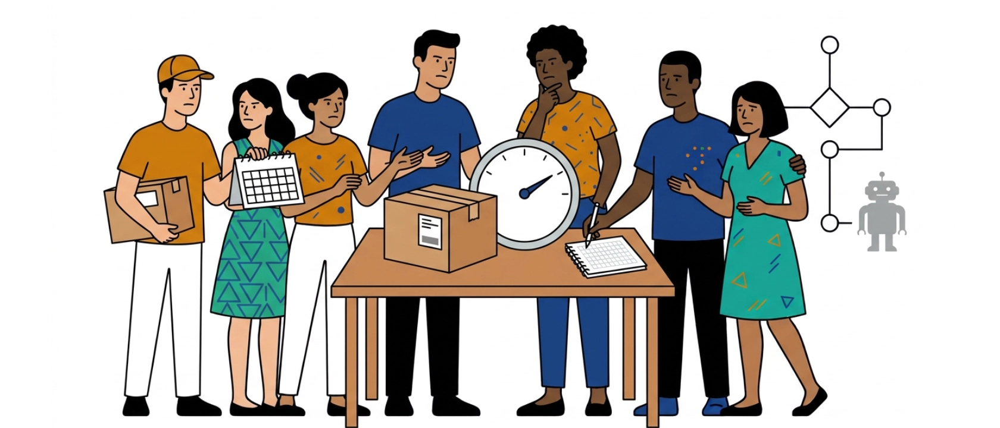

MODULE 3 • SÉANCE 1
Chiffrer le doute
« Livraison demain, probablement »

Un transporteur annonce : « votre colis arrivera demain, à 80 % de chances ». Que vaut cette phrase ? Peut-on la vérifier ? Et comment une machine peut-elle s'en servir pour décider ? C'est la question de ce module : agir malgré le doute, en le mesurant plutôt qu'en l'ignorant.
À la fin de cette séance, vous saurez
- écrire une même chance en fréquence, en cote et en probabilité ;
- convertir une cote en probabilité, et inversement ;
- juger une prévision sans conclure trop vite.
Trois écritures d'une même chance
| Écriture | Comment ça se lit | Ici |
|---|---|---|
| Fréquence naturelle | Sur combien de cas, combien se produisent | 4 sur 5 |
| Cote | Cas favorables contre cas défavorables | 4:1 |
| Probabilité | Part des cas favorables dans le total | 80 % (ou 0,8) |
probabilité = x / (x + y) pour une cote x:y
Les fréquences naturelles (« 4 colis sur 5 ») sont les plus faciles à se représenter : on se trompe moins avec elles qu'avec des pourcentages.
L'erreur classique : confondre cote et probabilité
Une cote de 1:4 signifie un cas favorable contre quatre défavorables, donc 1 chance sur 5, soit 20 % : pas 25 %, comme on le croit souvent en lisant « 1 et 4 ». Deux cotes sont égales quand leur rapport l'est : 4:1 = 8:2 = 40:10.
Peut-on vérifier une probabilité ?
Oui, mais pas avec un seul colis. Si le transporteur dit « 80 % » et que votre colis arrive en retard, on ne peut rien conclure : un cas sur cinq est en retard, c'est justement ce qu'il annonçait.
Pour juger, il faut regarder beaucoup de promesses du même niveau. Sur 50 colis annoncés « 80 % », on attend environ 40 livraisons à l'heure. Voir 25 ou 49 serait un signal que la probabilité annoncée est mal calibrée. À l'inverse, annoncer « 0 % » puis livrer à l'heure est une erreur franche : un événement jugé impossible a eu lieu.
Atelier : convertir cotes et probabilités
Modifiez les nombres. Essayez 4:1, puis 1:4, puis 25 %.